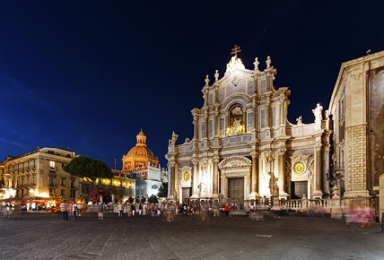
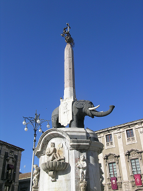
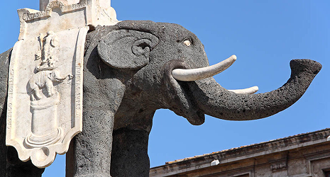
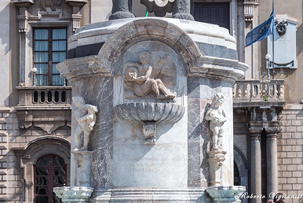
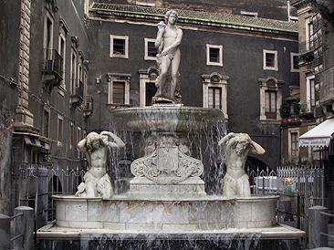
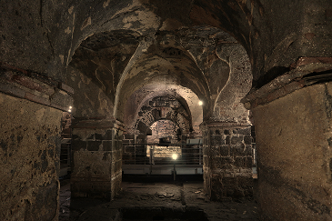

Una piazza storica
Il posto fu di varie colonie tra cui calcidese, siracusana e romana ma fu anche di dominio bizantino e spagnolo.La piazza venne ricostruita dopo gli eventi sismici ed eruzioni, la più devastante fu del 1669, che rase al suolo maggior parte della città.




Monumenti e simboli
La piazza è circondata da altre monumenti importanti che incuriosiscono e ammagliano i turisti. Al centro vi è La fontana dell’elefante, simbolo della città, ideata nel 1735, ha l’obelisco egizio sostenuto da una statua in pietra lavica a forma di un elefante di origine bizantina che i catanesi lo chiamano “u liotru”, simbolo della sconfitta dei cartaginesi. Questo monumento rappresenta anche la civiltà cristiana con la croce e le palme che lo conorano.

Fontana dell’Amenano
La fontana dell’Amenano fu realizzata nel 1867 da Tito Angelini, scolpita in marmo di Carrara. Essa è dedicata al fiume Amenano che dopo eruzioni è stato coperto dalla lava e oggi scorre sotto la città.Inoltre dietro la fontana una scalinata lavica porta alla Pescheria di Catania.

Terme Achilliane
Le terme Achilliane, situate sotto la cattedrale di Sant’Agata.Un tempo erano molto estese ma con l’eruzione rimasero nascoste fino al XVIII secolo e visitabili tutt’oggi scendendo attraverso una scala situata a lato della cattedrale.
Eventi
Ospita eventi culturali, musicali e specialmente gastronomici, raccontando la tradizione catanese permettendo di assaggiare le specialità nelle zone della piazza stessa.Si possono trovare le bancarelle di ogni tipo, laboratori culinari e performance artistiche.